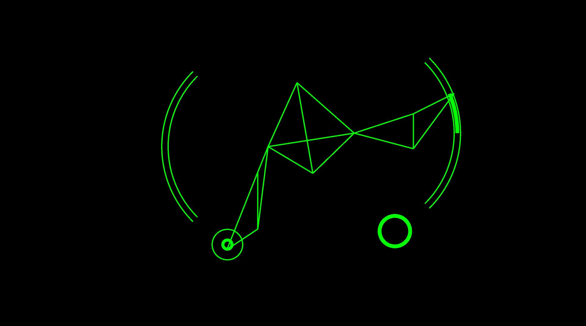
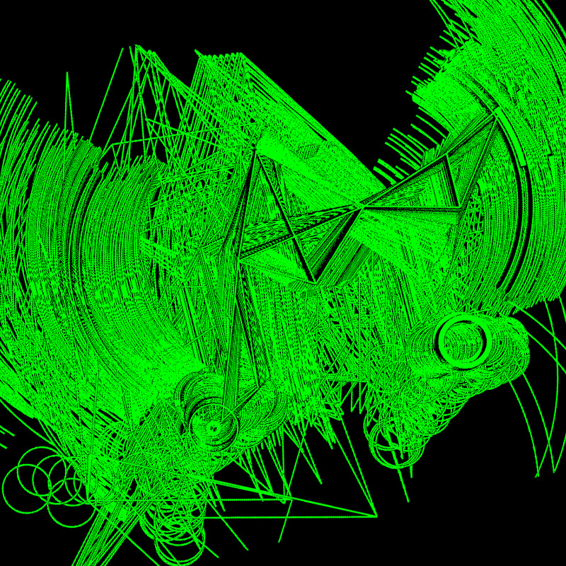

Drop the Beat
Motion Controlled Generative Music
IMA, Shanghai
Dec 14th, 2017
Are you ready? Let's drop the beat!
Drop the Beat acts as an early-stage exploration and experiment for my Interactive Media Arts Capstone that will be completed in next May.
Think about some live performances that you have been to, especially those includes dancing, what is the relationship between background music and the performance. As I have observed, it is always the case that those two parts are separated in some way. There is almost no communication between the performer and the background music. The dancer, as the key of the performance even need to adjust himself to improvise with the sound. However, the point of a live performance is the word ‘live’. During each performance, the dancer may have different emotion that may want to adjust his movements accordingly. If we can give more control to dancer and make the music go along with the movement, the dancer can pause at some movements, go back to a certain movement, jump over a paragraph etc. I believe this would help dancers better express themselves.

Drop the beat, as the first try on this idea, allows users to make beat, keep them in a looper and change background music. Kinect catches the movement in Processing. Then, Processing gives a mirrored visual and a control panel. Every time the user triggers something, Processing sends a message through open sound control. Max MSP receives the message through UDP, put the beat into a matrix and loop through it.
Instructions on how to use it
1. Open up Max patcher and check the makenote node
2. If not, open the makenote Help patch and copy the node, re-link it
3. In the makenote Help patch, go to 'more' tab and turn on the toggle and then turn off(this somehow triggers the MIDI channel so we can use different instruments)
4. Open Processing sketch and hit play
Future Movements

< prev
Home
next >